Загрузка файла
Индикатор внутри обложки; название остаётся скелетоном.
Обработка
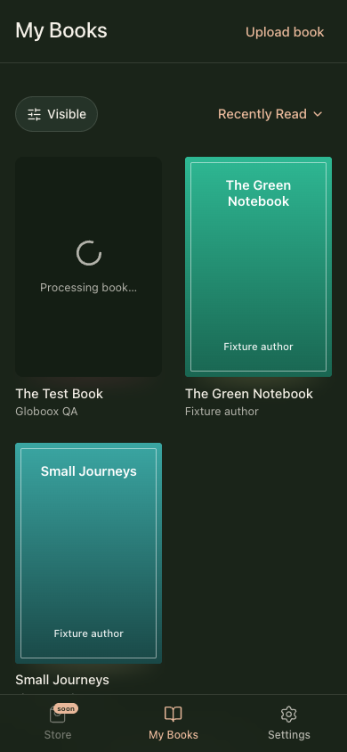
Настоящее название уже получено; индикатор остаётся в обложке.
Книга готова
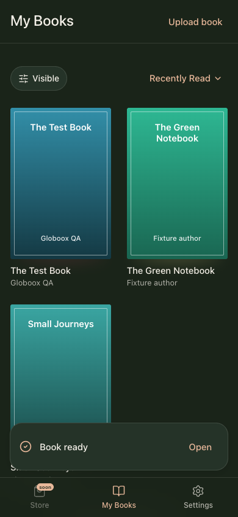
Штатная FallbackCover для книги без обложки; тост Open без крестика.
Книга уже есть
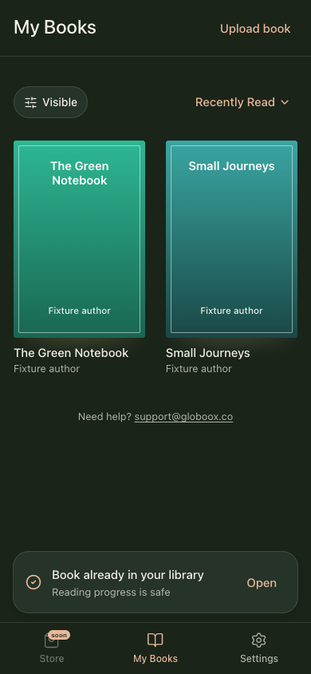
Reading progress is safe.
Ошибка обработки
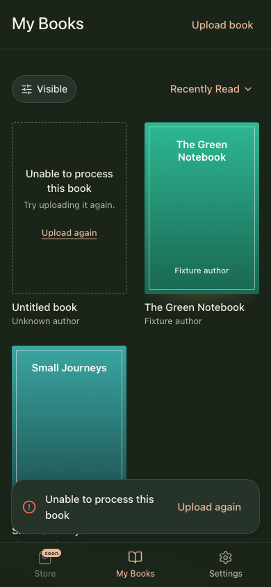
Прозрачная пунктирная рамка, без иконки; компактный текст и Upload again.
Готовность неизвестна
Тот же контейнер 2:3. Check status проверяет существующую задачу.
Полка не обновилась
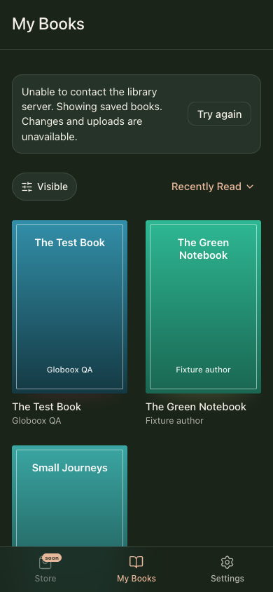
Только верхняя плашка; готовая книга доступна. Дополнительного тоста и подписи под карточкой нет.
Полка обновлена
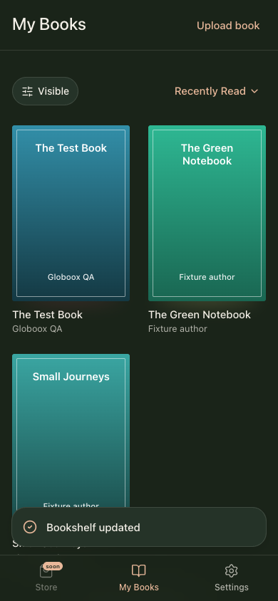
Тост Bookshelf updated после подтверждения сервера.
Подтверждение загрузки потеряно
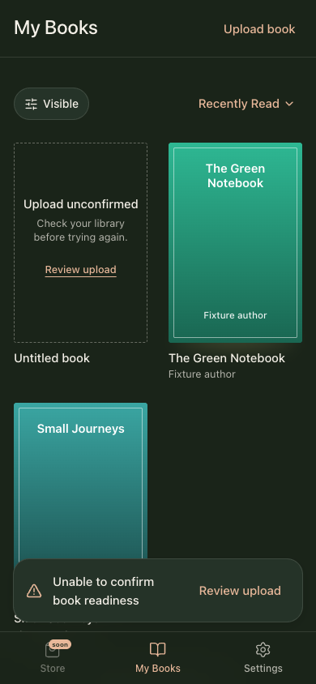
Review upload честно обозначает переход в окно сверки.
Сверка перед повтором
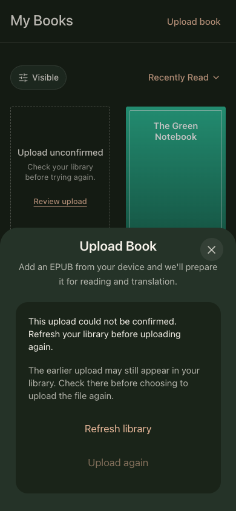
Повтор доступен только после успешной сверки. Найденная ready/processing-книга ведёт обратно в библиотеку.
Ошибка архивирования
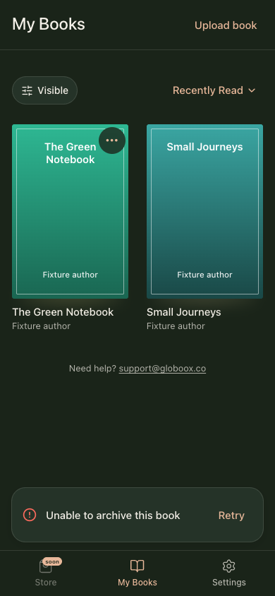
Только тост Retry; дополнительная плашка убрана.
Нет доступа
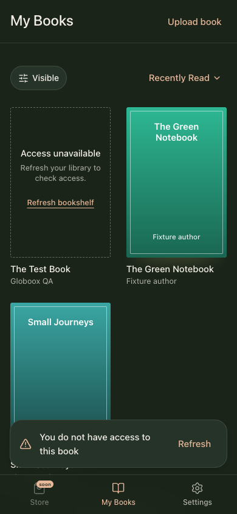
Карточка и тост объясняют отказ; действие Refresh соответствует поведению.
Требуется вход
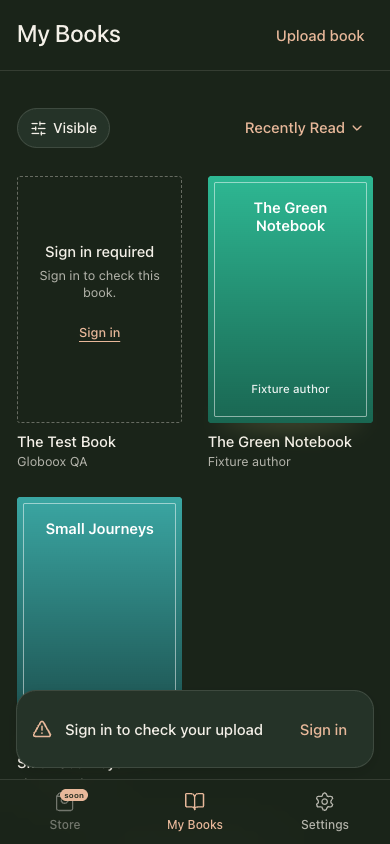
Sign in в карточке и тосте.
Файл отклонён
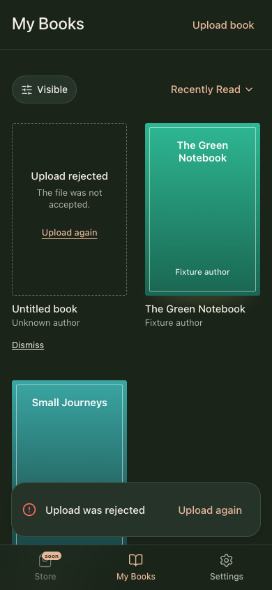
Подтверждённая ошибка; Upload again и возможность убрать локальную заглушку.